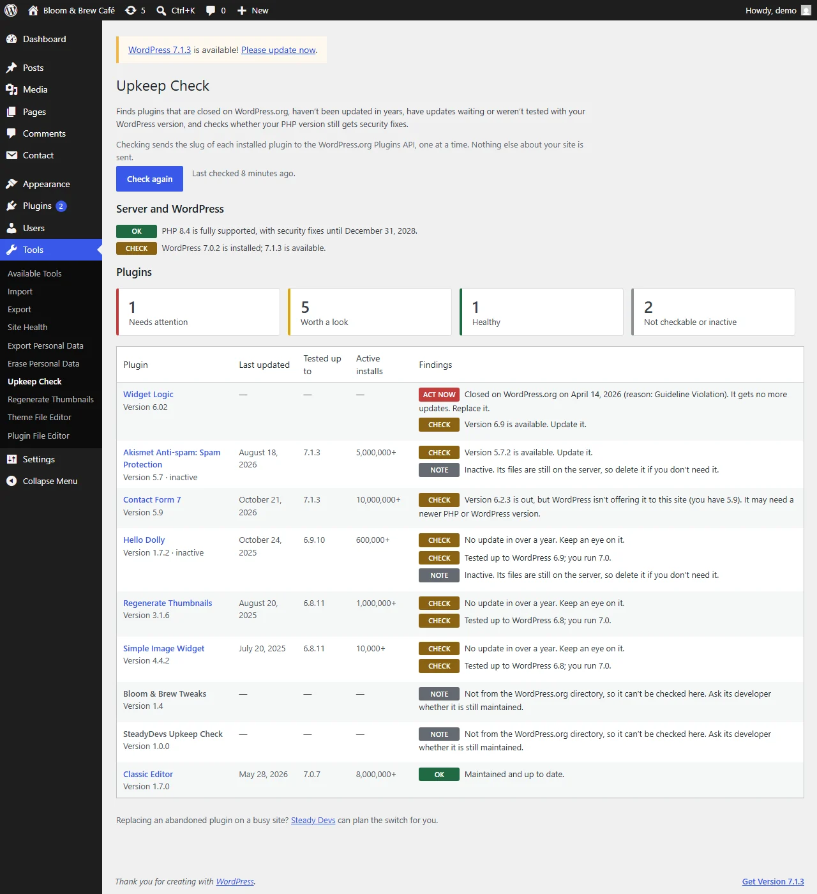
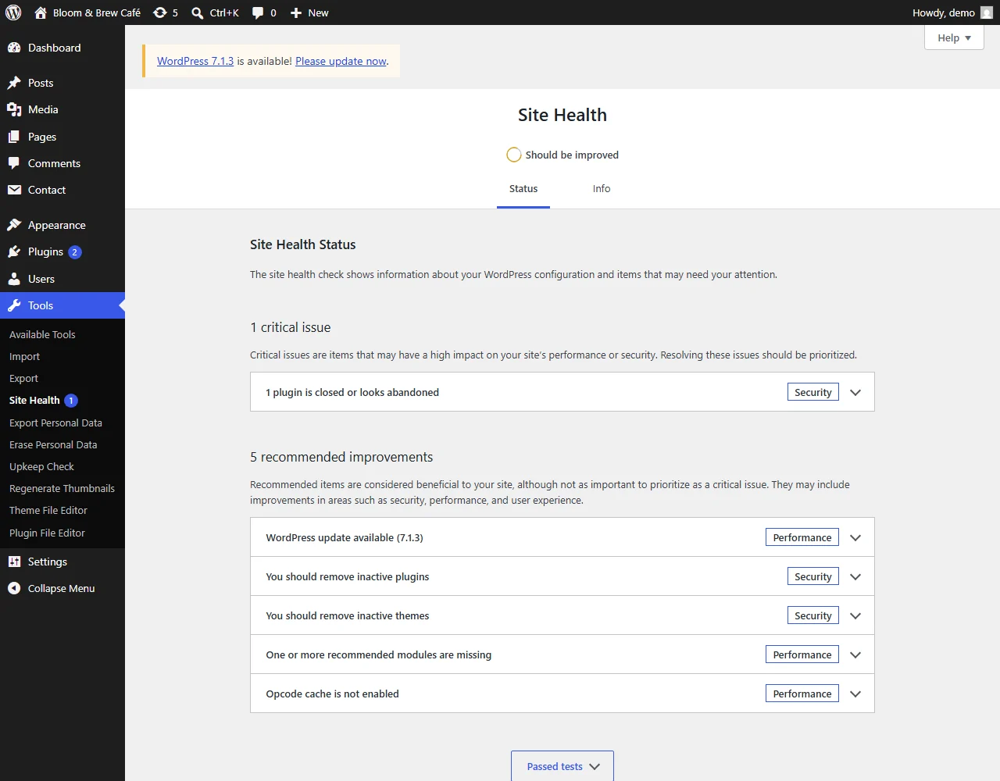

Closed on WordPress.org
Plugins removed from the directory, often for a security issue, keep running on your site with no warning. Upkeep Check shows when and why they were closed.
SteadyDevs Upkeep Check · free WordPress plugin
A plugin that stops getting updates stops getting security fixes, and WordPress won't warn you. Upkeep Check finds the plugins that were closed, abandoned or left behind, and tells you in plain words what to do about each one.
Version 1.1.0 · GPL, free forever · WordPress 6.0+ · PHP 7.4+ · no account, no sign-up · listed on WordPress.org
1 plugin is closed or looks abandoned
Widget Logic was closed on WordPress.org on 14 April 2026. Replace it.
How it works
These are real screenshots, from a check on a demo site against the live WordPress.org directory.
The report
Go to Tools → Upkeep Check and press Check my plugins. Each plugin gets a verdict you can act on, next to the facts behind it: when it was last updated, the WordPress version it was tested with and how many sites use it.

Site Health
After a check, Tools → Site Health shows a critical issue when a plugin is closed or abandoned, and a recommendation when updates are waiting. It reads the saved report, so opening Site Health stays as fast as before.

What it checks
The Plugins screen shows updates. It doesn't show which plugins will never get another one.
Plugins removed from the directory, often for a security issue, keep running on your site with no warning. Upkeep Check shows when and why they were closed.
No update in over two years is flagged to act on. No update in over a year is flagged to keep an eye on.
Plugins whose authors haven't tested them with the version of WordPress you run.
When the directory has a newer version than WordPress offers your site, usually because it needs a newer PHP or WordPress, you're told why the update isn't showing.
Switched off but still on the server. Delete the ones you don't need.
Whether your PHP version still gets security fixes, and the date it stops, from php.net's own schedule.
Light by design
No background scans, nothing on the front end of your site, and no account. One option holds the last report, and deleting the plugin removes it.
Get started
Found something you can't just switch off?
An abandoned plugin that runs your forms, bookings or checkout can't simply be deleted. Our engineers can find a maintained replacement, move your data across and switch over without downtime.
FAQ
Download Upkeep Check, press one button, and see which plugins need you.
Tell us what you found or what you'd like it to check. We usually reply within one business day.